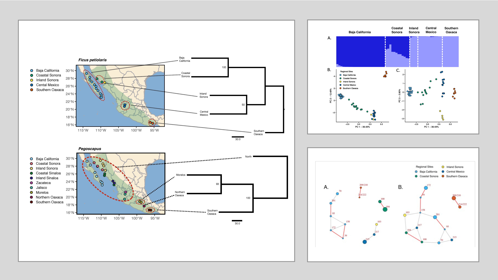

In this study, we investigate the genetic differentiation of the widely distributed fig species, Ficus
petiolaris , and its associated pollinating wasp, Pegoscapus, using next-generation sequencing data.
We explore the role of geographic factors and species-specific traits in shaping their genetic structures.
Surprisingly, despite their mutualistic relationship, these two species exhibit different population
structures and histories. The Gulf of California acts as a significant barrier for Ficus petiolaris,
while Pegoscapus shows weak genetic subdivision across northern and central Mexico but significant
differentiation south of the Trans-Mexican Volcanic Belt.
We define three subspecies for each species, but their geographic congruence is partial. Despite strong
selective pressures, we find that genetic differentiation is influenced more by species-specific traits than
shared vicariance events.